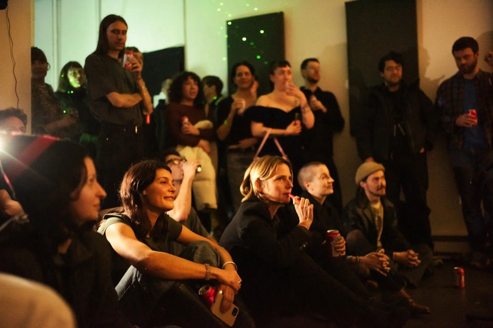
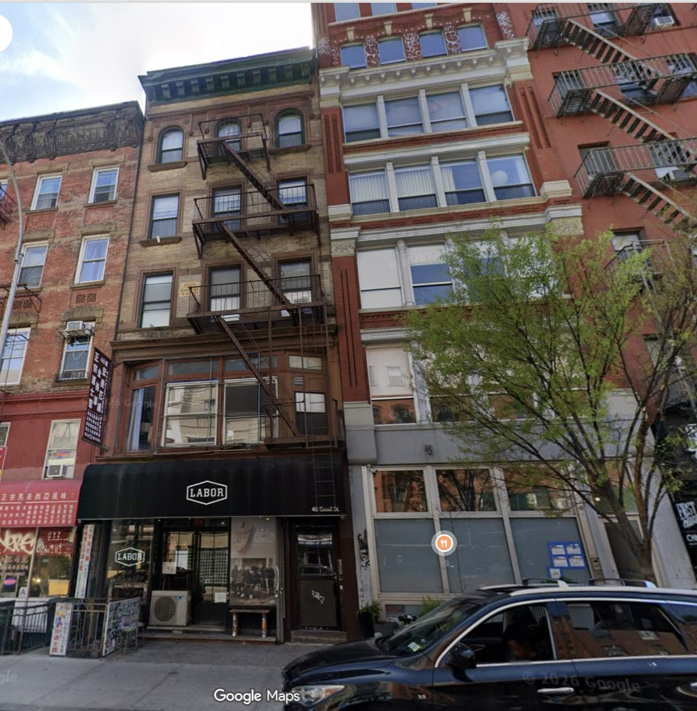
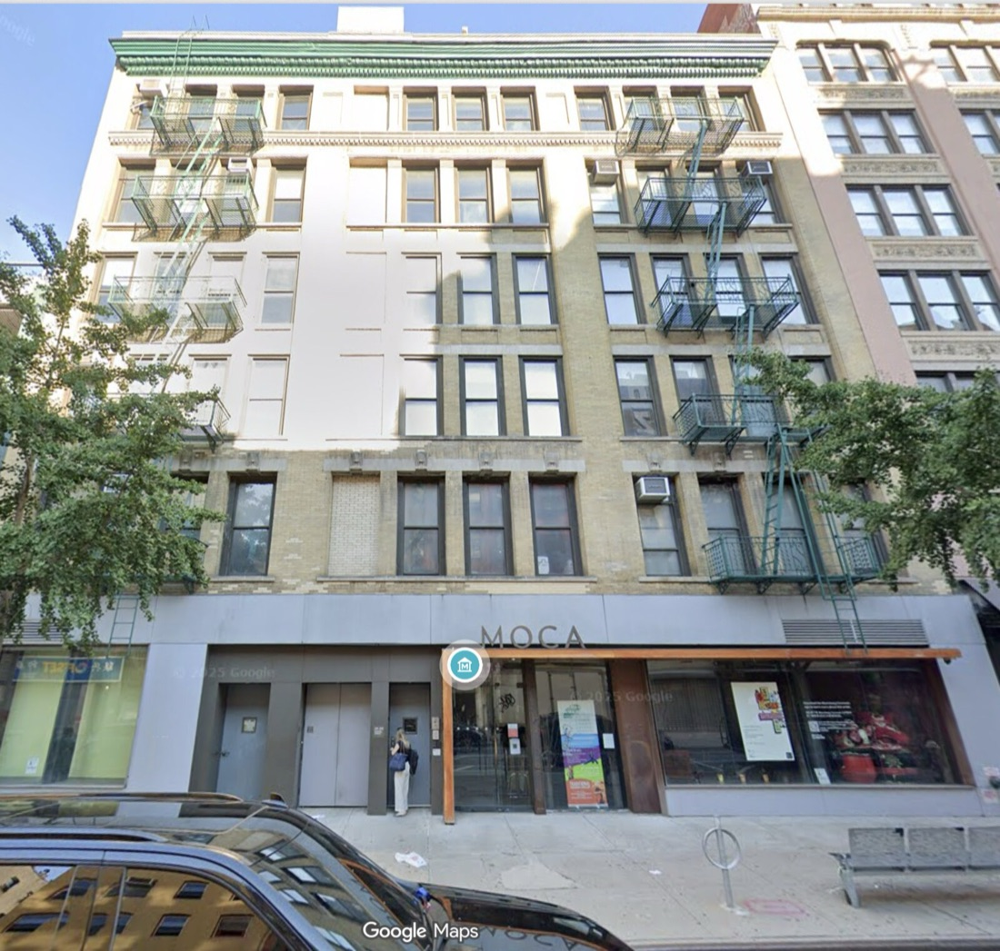
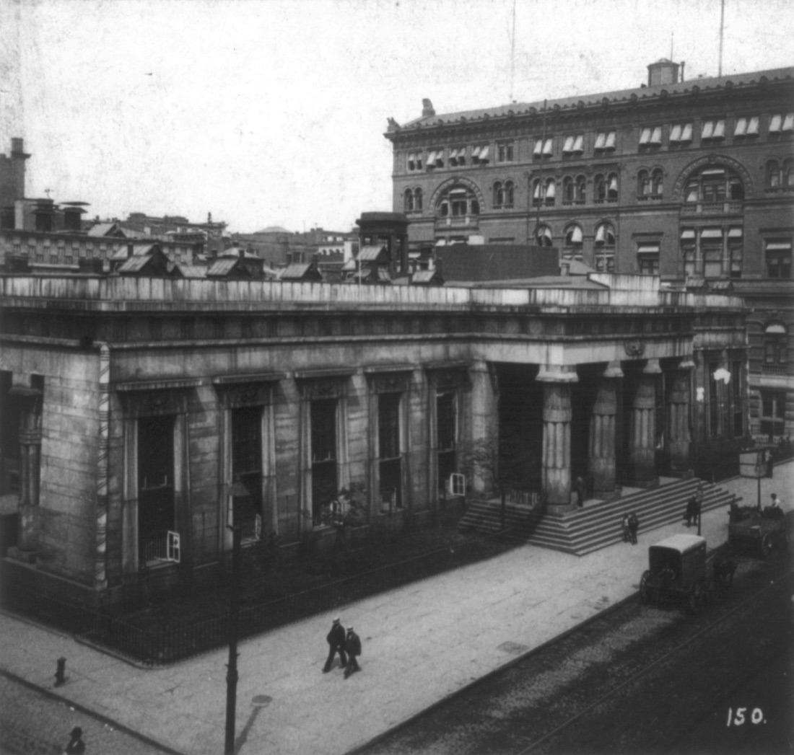
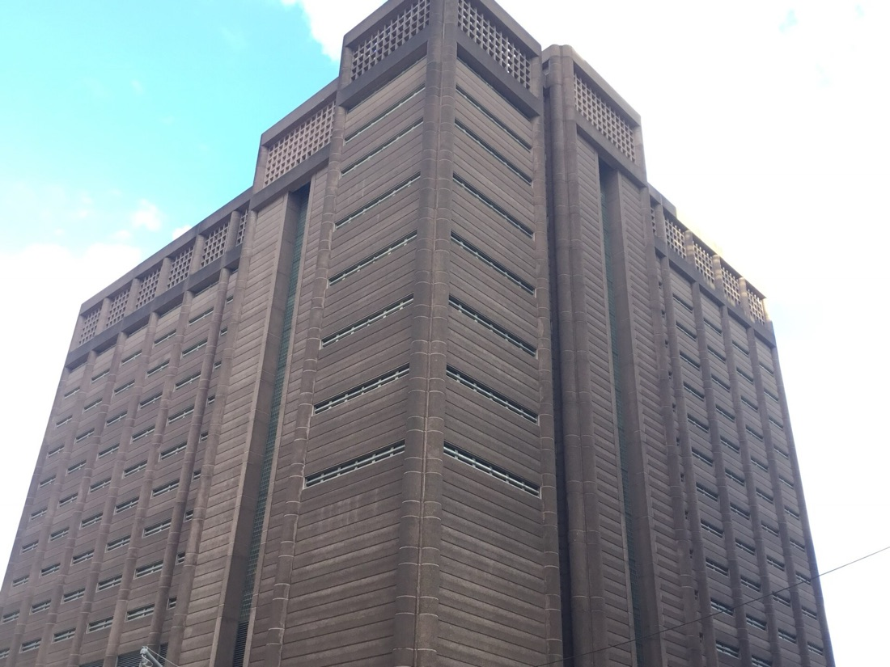
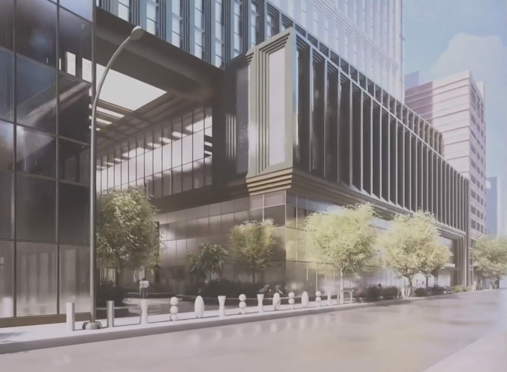
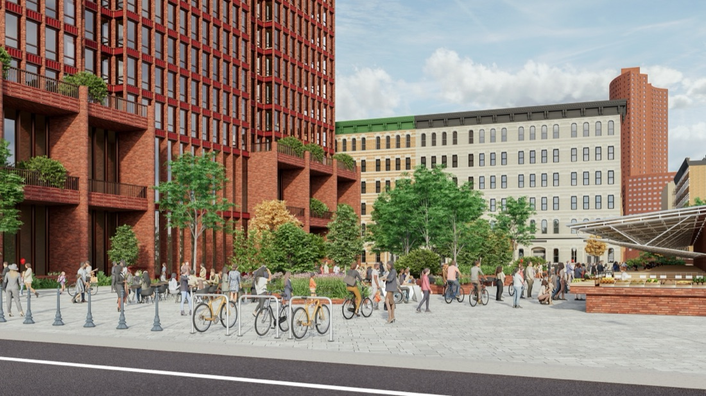
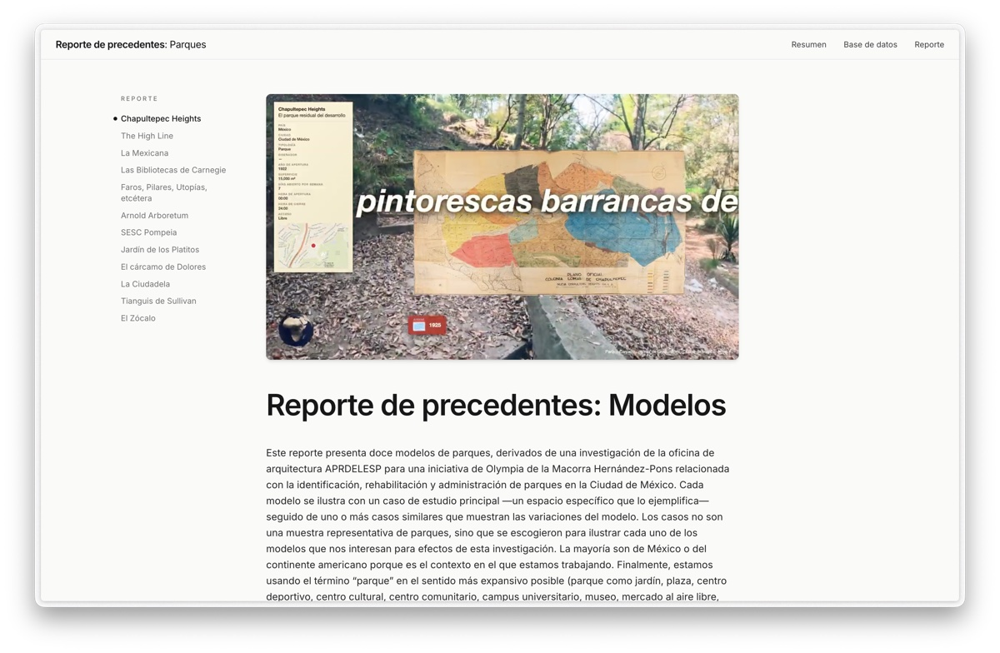
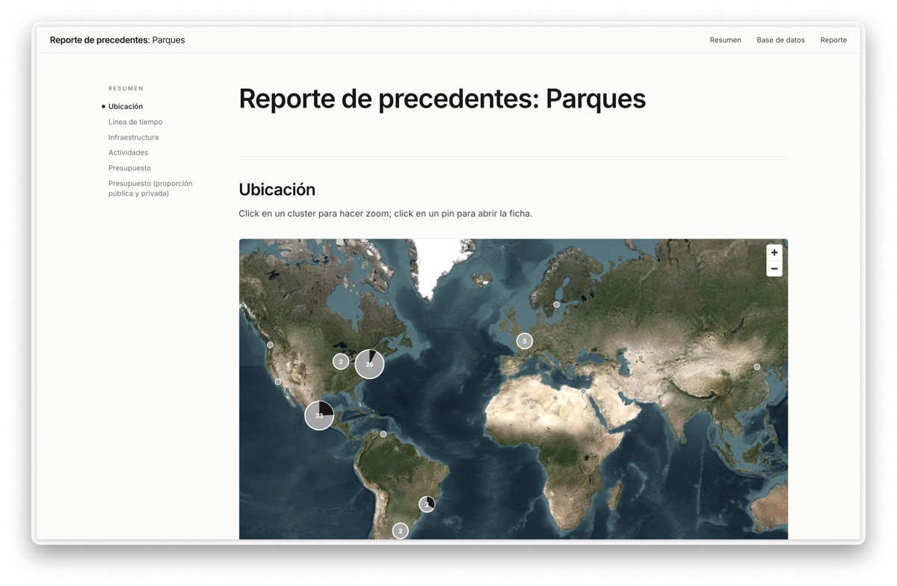

Montez Press Radio Studio Radio
Montez Press Radio Studio Radio is the online radio station of Montez Press Radio Studio, an option studio taught by APRDELESP at Cornell University's Department of Architecture in the fall of 2026. The studio is designing a new space for Montez Press Radio, an experimental nonprofit broadcasting and performance platform that has been streaming live from Chinatown, NYC, since 2018, and that is moving from Canal Street to 215 Centre Street, a few blocks away. We started a radio station of our own.
It will stream live six times this semester: one-hour shows, in which we read and discuss the precedents report, a collection of short illustrated texts the studio wrote about places tied to the project by adjacency: Montez Press Radio and its new neighbors, the jail being built two blocks away, the jail it is replacing, and other spaces and institutions that do something like what Montez Press Radio does. Each show takes one theme from the report and is hosted by the students who wrote about it and is sometimes joined by a guest. The rest of the time, the station plays music from its library.
: Architectural discourse.
: Chinatown.
: Incarceration.
: Land value and gentrification.
: Cultural institutions.
: Media.
Broadcasts
- Broadcast 1, : Architectural discourse, with Julian Escudero Geltman
Broadcast 1: Architectural discourse
, 56 minutes
0:00 / 56:16
Hosted by Dan Girgis and Rodrigo Escandón Cesarman. Guest: Julian Escudero Geltman.
Dan Girgis reads his vignette from the precedents report, “A Critical Look at Architectural Critique Today.” With guest Julian Escudero Geltman, co-producer of the podcast I Would Prefer Not To, Dan and Rodrigo Escandón Cesarman discuss how much of the lament for the public architecture critic is nostalgia, compare newspapers with social media platforms, and talk about the New York Review of Architecture, post-literacy, the turn to research and autonomy, and how much of an architect’s work is negotiating with institutions. The show closes with a recording of Jane Jacobs on writing.
Chapters
- Introduction: the station and the guests
- Dan reads “A Critical Look at Architectural Critique Today”
- Nostalgia and the institutions of critique
- Does anyone talk about buildings now?
- Letters to the editor and NYRA
- Post-literacy and the case for text
- Research, autonomy, and the architect’s agency
- What architects actually do
- Architects as politicians
- Jane Jacobs: “On Writing”
Guest
Julian Escudero Geltman is a Brooklyn-based podcaster. He is also an architectural designer, critic and educator. He studied environmental studies at Oberlin College (2017) and architecture at MIT (MArch, 2023). Along with Ana Miljački, he co-produces I Would Prefer Not To, a podcast from MIT’s Critical Broadcasting Lab and the Architectural League of New York in which architects talk about the commissions they turned down, and which won the 2025 AIA Architecture in Media Award. He is a co-founding principal of AGONY, Architecture Group of New York.
Montez Press Radio Studio
Fall 2026 Option Studio
ARCH 4101/4102, 5101, 5115/5116, 7112/7113 · Section 505
Cornell University, Department of Architecture, AAP
6 credits, letter grade only.
APRDELESP (Rodrigo Escandón Cesarman),
Visiting Critic · re284@cornell.edu · Office hours: by appointment.
Schedule:
Thursdays and Fridays, 12:10–5:10 pm, August 27 – October 30
Tuesdays and Fridays, 12:10–5:10 pm, November 3 – December 4
Frances Shloss Studio, East Sibley Hall, third floor
Final review: Wednesday, December 9 (department Option Studio review day)
Studio description
Montez Press Radio (MPR) is an experimental nonprofit broadcasting and performance platform founded by three members of the publishing house Montez Press: Anna Clark, Stacy Skolnik, and Thomas Laprade. They have been streaming live from Chinatown, NYC, since 2018. Every event streamed live from the studio is free and open to the public, and they also have people programming in London and Mexico City, streaming every month or so from a different venue each time. In an era of social media and podcasts and Twitch streams — often recorded alone, clipped for virality and distributed by algorithm — MPR insists on live radio: communal, unedited, and in person. For the city’s artists and writers, it has become an alternative to an art world and a media landscape they have grown disillusioned with: a winner-take-all market in which a few artists absorb most of the money and attention, a fierce competition for the grants, residencies, and prestige everyone else is left to live on, the constant self-promotion that social media demands, and a city where the cheap rent and day jobs that once let artists simply make work have disappeared. MPR has no owners or advertisers to answer to, so hosts are free to be as edgy or esoteric as they like. And because everything is recorded, the station has also become an ever-growing archive of the underground scenes that pass through it: a record of downtown now (and Mexico City and London), made by everyone who is willing to talk.1

MPR is also moving from its current location, above a skate shop on Canal Street, to 215 Centre Street, a few blocks away, where it will occupy part of the fifth floor (about 3,600 sq ft). This new building has been the home of the Museum of Chinese in America (MOCA) since 2009, in a space designed by Maya Lin, and the museum is turning it into its permanent home. Along with MPR and MOCA, the building will host several other cultural institutions: Blank Forms, a nonprofit devoted to experimental and creative music, producing performances, books, records, and artists’ archives; carriage trade, a nonprofit gallery whose group exhibitions read art against its social and political context; CITYGROUP, an architecture collective that runs a storefront space on Forsyth Street, on the Lower East Side, and questions how architecture is normally practiced; and times, a new nonprofit arts center for experimental, time-based projects, planned to run for only three years.


The building sits in a part of Chinatown that is changing fast and where new tenants and long-standing communities are negotiating what the neighborhood will become. Two blocks away, on the site of the demolished Tombs, the city is building the new Manhattan Detention Center as part of its effort to close Rikers Island. At roughly 300 feet, it will be the tallest jail in the world.2 The neighborhood fought it for years. Neighbors United Below Canal (NUBC), a coalition of residents, businesses, and organizations from the blocks south of Canal Street, sued the city: a judge annulled the project’s approvals in 2020, and an appeals court reinstated them the next year.3 There have been protests over the years, and there still are.4 There have also been alternative proposals from the community: in 2025, NUBC, Welcome to Chinatown, and the architects Ideas of Order proposed moving the jail into the vacant federal jail nearby and putting 1,040 deeply affordable homes on the site instead.5 Construction went ahead anyway in January 2026,6 and the budget has grown to nearly $3.8 billion; the jail is expected to be finished around 2032.7




MOCA’s presence here is not new. Founded in 1980 as the New York Chinatown History Project, the museum spent its first decades at 70 Mulberry Street and moved into 215 Centre Street in 2009,8 but its purchase of the building has not been without controversy. The museum has been criticized for accepting $35 million from the city: a “community give-back” negotiated between 2018 and 2019 as part of the political deal that approved the jail, and the money behind the museum’s purchase of the building.9 Activist groups called it “jail money,” picketed the museum, and called for a boycott.10
On the other hand, the stated purpose of the grant is to offset the jail’s impact on the neighborhood by investing in Chinatown’s cultural infrastructure, and with the jail now under construction, that is what it is doing. The building is the grant at work. This is the condition the studio moves into: the meaning of the jail, and of the cultural infrastructure it has enabled, is not settled, but rather is up for grabs, and it is constantly being contested, in court, on the street, and inside the building we are designing for.
The studio takes on the design of MPR’s new space as a real commission, with MPR as a real counterpart: they present their needs, respond to the work, and join the final review in person. The space is also an entry point into larger questions: the ones the site raises — the jail, the grant, a neighborhood negotiating what it will become — and the ones MPR raises: what does it take for an institution like this to exist? So alongside the drawings, we consider budgets, feasibility, funding, and governance. How is an institution like MPR funded? Who makes the decisions that shape it, and how? What does any of that have to do with architecture? And we do not limit ourselves to the objects traditionally considered architecture: the project may require designing a tool for scheduling the spaces, a piece of furniture for the guests, or a physical device for listening to MPR. What can we, as professional architects, with our understanding of cities and buildings, offer a DIY institution like MPR?
The studio will begin with a collective precedents report. Each student will research at least one case study: a space or an institution tied to ours by adjacency — political or economic adjacency to the jail, spatial adjacency to the new building, thematic adjacency to what MPR does; the jail itself, the jails it is replacing, MPR and its neighbors themselves. Each case will be written as a vignette: a short, illustrated text (200–500 words) with maps, floor plans, and other images.11 The vignettes will be edited together into a single report. Out of these precedents we hope to find patterns and types, but instead of making a main thesis or providing a singular argument for the project, the report will serve as a set of characters that we can refer to as we think through the design, both within the studio and with guests. From week 8, the report goes on air: a live show, most weeks, in which the vignettes are read, discussed with the public and with guests, and brought back to the projects.


For the architectural project, we will use a methodology developed, tested, and constantly updated by APRDELESP. We will use architectural drawings as the workspace where the dialogue between everyone involved in a design process takes place. In practice, this means three things. We will expand as much as possible the universe of objects we draw: not only the objects conventionally considered “architectural,” such as walls, ceilings, or floors, but also the furniture, the belongings, and the inhabitants. We will distinguish existing, proposed, and suggested objects with a color code. And we will treat each drawing as the latest iteration of a continuously updated document, not as material made for marketing or exhibition. The project becomes the result of a conversation around social dynamics and material conditions, both existing and proposed: the drawing becomes a relationship rather than an object.
Ezra Marcus, “Making a Scene on the Radio,” The New York Times, March 15, 2024 (in the shared readings).↩︎
“A precarious promise: What the tallest jail in the world means for those who live next to it,” Washington Square News, September 17, 2025.↩︎
“Chinatown mega-jail plan blocked by community lawsuit,” The Village Sun, September 2020; Matter of Neighbors United Below Canal v. de Blasio, App. Div., 1st Dept. (2021); “Appeals Court OKs New Chinatown Jail,” Tribeca Trib, 2021.↩︎
For example, “Chinatown residents rally against construction of jail,” Fox 5 New York; and the Jing Fong and MOCA pickets (see the required readings).↩︎
“Alternative Plan to the Chinatown Jail,” Welcome to Chinatown / NUBC / Ideas of Order, 2025; “Ideas of Order designs alternative housing plan for Chinatown mega-jail site,” The Architect’s Newspaper, June 2025.↩︎
Morgan Gu, “Mamdani administration moves forward with building a megajail in Chinatown,” Prism, January 28, 2026.↩︎
“Rikers replacement in Manhattan to open five years after jail complex’s closure,” Queens Daily Eagle, January 24, 2025.↩︎
“Museum of Chinese in America (MOCA),” MOCA Collections. 70 Mulberry Street remained the museum’s collections home until the January 2020 fire there.↩︎
“Museum of Chinese in America Should Reject ‘Jail Money,’ Says Artist-Activist Group,” Hyperallergic, October 2020.↩︎
“As Museum of Chinese in America Reopens Doors, Protesters Say Chinatown Deserves Better,” Gothamist, 2021; “‘Chinatown is Not a Museum,’ Protesters Chant at MOCA Gala,” Hyperallergic, November 2024; “Demonstrators boycott Chinatown museum to protest new mega jail,” Washington Square News, October 2022.↩︎
For examples, see APRDELESP’s precedents report for Parques and the notes series at aprdelesp.com: Notes on the White Plastic Chair (with a movie version), Notes on Winnie-the-Pooh’s house-tree, and Notes on Ease.↩︎